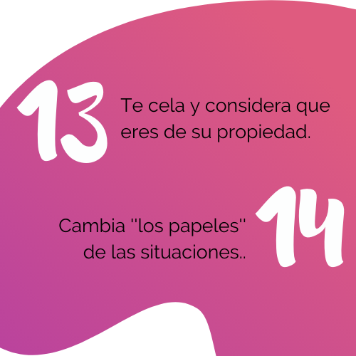

Infórmate


Si has sido o estás siendo víctima de violencia de género, este espacio esta dedicado para ti. Puede que en este momento te sientas confundida y estés en busca de ayuda y apoyo. La Fundación Milagro de Abril tiene sus corazones abiertos para brindarte toda la información y orientación que necesitas. Recuerda que en este proceso no estas sola y no tienes la culpa de lo que te ocurrió o te está ocurriendo, nadie merece ser lastimado y vulnerado. Creemos en ti y esperamos poder brindarte nuestro apoyo incondicional para acompañarte en tu proceso de recuperación y a que juntos superemos esta experiencia.
A continuación, se presentan algunas de las reacciones que son naturales y esperadas en los sobrevivientes de trauma y pérdida. No hay una lista completa de reacciones traumáticas que esperar, sin embargo, incluyen en ningún orden en particular:
Pesadillas
Susto nocturno
Pérdida de apetito
Irritabilidad, le molestan los demás.
Llanto, llanto incontrolablemente
Incapacidad para llorar
Agitación física o mental
Respuesta exagerada de sobresalto
Caminar nervioso o sin rumbo
Agacharse o acurrucarse
Aislarse
Automedicarse
Extrema precaución
Impulsividad
Obsesionarse por los detalles
Sentido de pérdida de control sobre la vida
Recuerdos
Pensamientos intrusivos
Malestar estomacal
Dolores de cabeza
Tensión muscular en una parte específica del cuerpo.
Sentirse inmovilizada
Querer no salir de casa u otro lugar seguro
Miedo a estar sola y miedo a demasiadas personas
Ira o rabia
Sentimientos y pensamientos vengativos
Cuestionarse a sí misma
Sentimientos de culpa
Sentimientos separados de otros y/o de uno misma
Una sensación de irrealidad, sentimientos como si uno estuviera en una niebla o nube
La urgencia de arreglar algo
Sentirse triste y letárgica
Sensación de hormigueo en la piel
Choque e incredulidad
Entumecimiento
Alta ansiedad
Trastornos del sueño: no poder dormir, incapacidad para quedarse dormida, interrupción del sueño, levantarse temprano o dormir demasiado
Cuando sientas ansiedad o tengas un ataque de pánico practica este ejercicio de respiración para retomar el control.
1. Si es posible, coloca ambos pies sobre el piso y las manos sobre los muslos.
2. Observa tu ansiedad/enojo/incomodidad y califícalo en esta escala del 1 al 10 (10 es el más intenso).
3. Relaja tus músculos abdominales.
4. Inhala por la nariz mientras cuentas hasta cuatro (tu abdomen se extenderá).
5. Exhala por la nariz mientras cuentas hasta cuatro (tu abdomen se contraerá).
6. Toma de cuatro a cinco inhalaciones y exhalaciones.
7. Observa tu ansiedad/enojo/incomodidad y califícalo en una escala del 1 al 10.